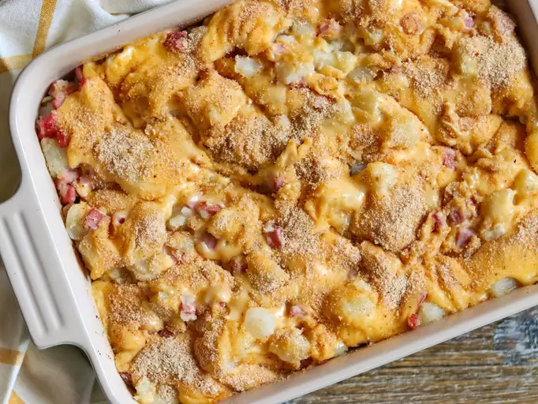

Home
Leftover Ham -n- Potato Casserole

Description:
This easy, cheesy ham and potato casserole uses up leftover Christmas or
Easter ham! It's perfect for a post-holiday breakfast or weeknight dinner.
My family looks forward to this classic combination.
Ingredients
- 6 small potatoes, peeled and cut into ½-inch cubes
- 7 tablespoons butter, divided
- ⅔ pound leftover cooked ham, cut into ½-inch cubes
- 1 small onion, finely chopped
- 3 tablespoons all-purpose flour
- 1 ½ cups milk
- salt and ground black pepper to taste
- 1 (8 ounce) package shredded Cheddar cheese
- ¼ cup bread crumbs
Steps:
-
6 small potatoes, peeled and cut into ½-inch cubes 7 tablespoons butter,
divided ⅔ pound leftover cooked ham, cut into ½-inch cubes 1 small
onion, finely chopped 3 tablespoons all-purpose flour 1 ½ cups milk salt
and ground black pepper to taste 1 (8 ounce) package shredded Cheddar
cheese ¼ cup bread crumbs
-
Meanwhile, preheat the oven to 350 degrees F (175 degrees C). Grease a 1
½-quart baking dish.
-
When the potatoes are almost finished, melt 3 tablespoons butter in a
skillet over medium heat. Add ham and onion; cook and stir until the
onion has softened and turned translucent, about 5 minutes. Remove from
the heat.
-
Drain potatoes; add to the ham mixture and stir to combine. Transfer to
the prepared baking dish.
-
Melt remaining 4 tablespoons butter in a saucepan over medium heat.
Whisk in flour and stir until the mixture becomes paste-like and light
golden brown, about 5 minutes.
-
Gradually whisk milk into the flour mixture; season with salt and black
pepper. Continue cooking and stirring until thickened, about 2 minutes.
Reduce heat to medium-low and stir in Cheddar cheese until melted.
-
Pour cheese sauce over ham and potatoes. Sprinkle bread crumbs over top.
-
Bake in the preheated oven until sauce is bubbly and browned, 25 to 30
minutes.
- Serve hot and enjoy!